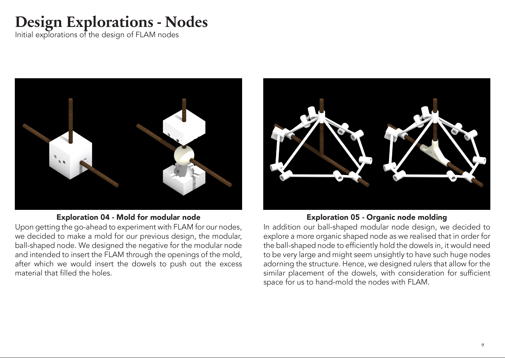

Project
Bridge with FLAM joints
Bridging digital design with real-world structures 🌉
Categories
Architecture | Environment

Organisation
Role
In charge of designing joints, experimenting with FLAM & assembly
Duration
7 weeks
Project Description
The Architectural Structure & Enclosure Design course introduces the interplay between design and physics. Digital Design and Fabrication investigates the transformation of concept design to production within contemporary digital media. Situated at the threshold between virtual and physical, design information and artifacts, it is comprised of both design computation methods as well as material fabrication techniques. In the second half of the term, a final project is undertaken combining what we have learnt from both Digital Design & Fabrication and Architectural Structures & Enclosure Design. We designed, prototyped, simulated, and tested a 1:1 full-scale structure, giving us a taste of building structures that are real and tangible and ultimately can impact the built environment. In our group of 4, with Man Lin, Keith and Janus, we were able to build a bridge that could withstand the most weight of 60kg.
Initial Research
We started the project by researching about different types of trusses as well as researching on existing bridges while taking into consideration the specifications of dimensions, access, weight, loading and deflection. Click here to skip to project content below.


Project Content


